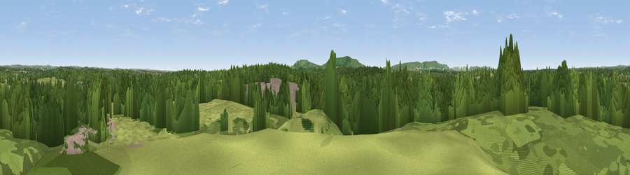

Viewpoint near Upper Dicker
#34825 in England · top 57% of its area beats it · near Upper DickerWhere it is
The exact computed spot (TQ 56725 09125). Click the marker for map links.
The view, rendered

A 360° render of this exact spot computed from the terrain model, tree cover and land cover — summer colours, afternoon light, calibrated against photographs of famous viewpoints. Real trees, hedges and buildings will differ in detail.
The panorama
Grey silhouette: terrain skyline in each direction (720 bearings, Earth curvature and refraction included). Dashed green: skyline with trees (+15 m) and buildings (+8 m) as obstacles. Blue strip: how far the ground is visible on each bearing.
Where the view opens
Wedge length = distance to the farthest visible ground on that bearing (vegetation-aware). Rings at 10, 25 and 50 km.
What fills the view
54% woodland · 39% grassland · 5% built-up · 3% cropland
Angular shares of the visible panorama (visual magnitude), not map area. Landscape diversity 0.42 (0–1 Shannon).
Key numbers
More beautiful places nearby
The staircase of upgrades: each row has a higher view potential than everything closer. Driving times are estimates from straight-line distance, calibrated against real road routing — check an actual route before setting out.
| Place | Direction | Drive | Score |
|---|---|---|---|
| Viewpoint near Wilmington | SSW · 6 km | ~12 min | 81.8 |
| Wilmington Hill | SSW · 6 km | ~13 min | 85.4 |
| Viewpoint near Alciston | WSW · 9 km | ~17 min | 85.8 |
| Viewpoint near Alciston | WSW · 9 km | ~17 min | 86.8 |
| Firle Beacon | WSW · 9 km | ~17 min | 88.9 |
| Viewpoint near Niton | WSW · 112 km | ~136 min | 89.2 |
| Viewpoint near West Bexington | W · 203 km | ~220 min | 89.5 |
| The Knoll | W · 204 km | ~222 min | 91.0 |
50.86040, 0.22552 · source: screening · position refined by local search. Computed location — check access rights before visiting.